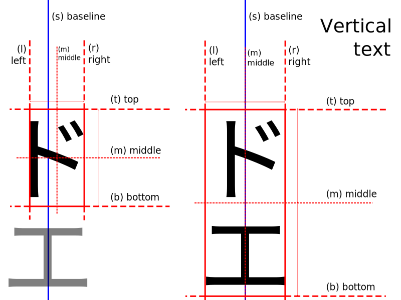
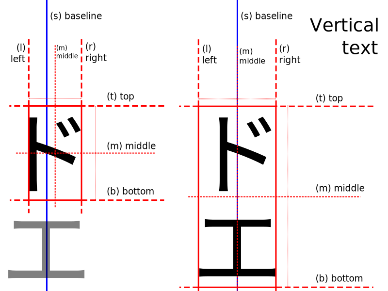

Text anchors¶
The anchor parameter determines the alignment of drawn text relative to the xy parameter.
The default alignment is top left, specifically la (left-ascender) for horizontal text
and lt (left-top) for vertical text.
This parameter is only supported by OpenType/TrueType fonts. Other fonts may ignore the parameter and use the default (top left) alignment.
Specifying an anchor¶
An anchor is specified with a two-character string. The first character is the
horizontal alignment, the second character is the vertical alignment.
For example, the default value of la for horizontal text means left-ascender
aligned text.
When drawing text with PIL.ImageDraw.ImageDraw.text() with a specific anchor,
the text will be placed such that the specified anchor point is at the xy coordinates.
For example, in the following image, the text is ms (middle-baseline) aligned, with
xy at the intersection of the two lines:

from PIL import Image, ImageDraw, ImageFont
font = ImageFont.truetype("Tests/fonts/NotoSans-Regular.ttf", 48)
im = Image.new("RGB", (200, 200), "white")
d = ImageDraw.Draw(im)
d.line(((0, 100), (200, 100)), "gray")
d.line(((100, 0), (100, 200)), "gray")
d.text((100, 100), "Quick", fill="black", anchor="ms", font=font)
Quick reference¶
 
Horizontal anchor alignment¶
l— leftAnchor is to the left of the text.
For horizontal text this is the origin of the first glyph, as shown in the FreeType tutorial.
m— middleAnchor is horizontally centered with the text.
For vertical text it is recommended to use
s(baseline) alignment instead, as it does not change based on the specific glyphs of the given text.r— rightAnchor is to the right of the text.
For horizontal text this is the advanced origin of the last glyph, as shown in the FreeType tutorial.
s— baseline (vertical text only)Anchor is at the baseline (middle) of the text. The exact alignment depends on the font.
For vertical text this is the recommended alignment, as it does not change based on the specific glyphs of the given text (see image for vertical text above).
Vertical anchor alignment¶
a— ascender / top (horizontal text only)Anchor is at the ascender line (top) of the first line of text, as defined by the font.
See Font metrics on Wikipedia for more information.
t— top (single-line text only)Anchor is at the top of the text.
For vertical text this is the origin of the first glyph, as shown in the FreeType tutorial.
For horizontal text it is recommended to use
a(ascender) alignment instead, as it does not change based on the specific glyphs of the given text.m— middleAnchor is vertically centered with the text.
For horizontal text this is the midpoint of the first ascender line and the last descender line.
s— baseline (horizontal text only)Anchor is at the baseline (bottom) of the first line of text, only descenders extend below the anchor.
See Font metrics on Wikipedia for more information.
b— bottom (single-line text only)Anchor is at the bottom of the text.
For vertical text this is the advanced origin of the last glyph, as shown in the FreeType tutorial.
For horizontal text it is recommended to use
d(descender) alignment instead, as it does not change based on the specific glyphs of the given text.d— descender / bottom (horizontal text only)Anchor is at the descender line (bottom) of the last line of text, as defined by the font.
See Font metrics on Wikipedia for more information.
Examples¶
The following image shows several examples of anchors for horizontal text.
In each section the xy parameter was set to the center shown by the intersection
of the two lines.